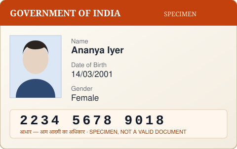

Hi, I’m Meera Raghavan and my refund for
order 870000012345 still hasn’t arrived. You can reach me on
9421809679 or at
meera.raghavan@example.in.
A
Thanks for writing in. I can see the order.
We are showing 1234 of 5678 refunds processed this week, so there is a delay.
Could you confirm the account it should go back to?
M
Yes — account 1139309559, IFSC
BARB0U5Q366. If UPI is quicker my ID is
meera878@ibl.
The card I paid with was 4614 6100 3307 6668.
A
For a bank refund I need to verify identity. Please attach a government ID.
You can also call 1800 425 3800, quoting scheme code ABCXI1234K.
M
Attaching it. My Aadhaar is 4908 1003 3900 and PAN
BOZLF8378G, date of birth
23/05/1975.

aadhaar-front.jpg · 412 KB
Transcript retained under the 15/08/2025 policy. Auto-closed after 7 days.